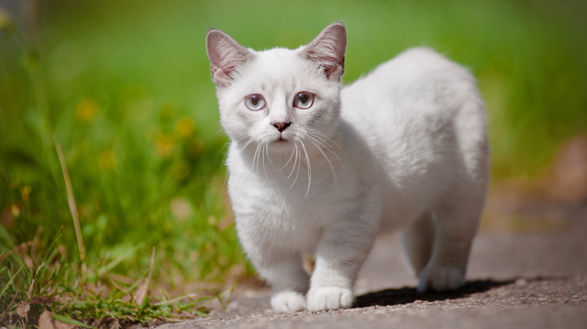
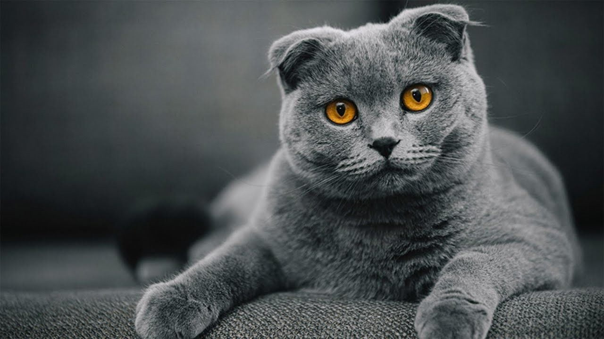
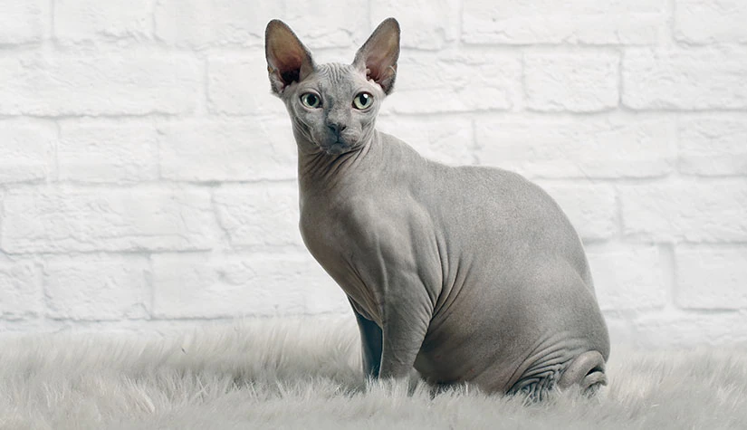

Munchkin cat
The Munchkin, also known as Sausage Cat is a breed of cat characterized by its very short legs, which are caused by genetic mutation.
Breed creation
Compared to many other cat breeds, it is a relatively new breed, documented since 1940s and officially recognized in 1991. The Munchkin is considered to be the original breed of dwarf cat. Short-legged cats have been documented a number of times around the world since the 1940s. A British veterinary report in 1944 noted four generations of short-legged cats which were similar to normal cats except for the length of the legs. This line disappeared during the Second World War but other short-legged cats were spotted in Russia during 1956 and the United States in the 1970s. In 1983, Sandra Hochenedel, a music teacher in Rayville, Louisiana, found two pregnant cats who had been chased under a truck by a dog. She kept one of the cats and named her Blackberry and half of her kittens were born short-legged. Hochenedel gave a short-legged male kitten from one of Blackberry's litters to a friend, Kay LaFrance of Monroe, Louisiana, and she named the kitten Toulouse. It is from Blackberry and Toulouse's litter that today's Munchkin breed is descended.

Maine Coon
The Maine Coon is a large domesticated cat breed. It is one of the oldest natural breeds in North America.
Origin
It is one of the oldest natural breeds in North America. The breed originated in the U.S. state of Maine, where it is the official state cat. The Maine Coon is a large and social cat, which could be the reason why it has a reputation of being referred to as "the gentle giant." The Maine Coon is predominantly known for its size and dense coat of fur which helps the large feline to survive in the harsh climate of Maine. The Maine Coon is often cited as having "dog-like" characteristics. The ancestral origins of the Maine Coon are unknown. Some speculate that they are descended from Norwegian forest cats or Siberian forest cats, which may have been brought to New England by settlers. There are also folk tales around their origin. One story involves Marie Antoinette, the Queen of France who was executed in 1793. The story goes that before her death, Antoinette attempted to escape France with the help of Captain Samuel Clough. She loaded Clough's ship with her most prized possessions, including six of her favorite Turkish Angora or possibly Siberian cats. Although she did not make it to the United States, all of her pets managed to reach the shore of Wiscasset, Maine, safely, where they bred with other short-haired breeds and developed into the modern breed of the Maine Coon.

Scottish Fold
The Scottish Fold is a breed of domestic cat with a natural dominant gene mutation that affects cartilage throughout the body, causing the ears to "fold", bending forward and down towards the front of the head, which gives the cat what is often described as an "owl-like" appearance.
Origin
Originally called lop-eared or lops after the lop-eared rabbit, Scottish Fold became the breed's name in 1966. The original Scottish Fold was a white barn cat named Susie, who was found at a farm near Coupar Angus in Perthshire, Scotland, in 1961. Susie's ears had an unusual fold in their middle, making her resemble an owl. When Susie had kittens, two of them were born with folded ears, and one was acquired by William Ross, a neighbouring farmer and cat-fancier. Ross registered the breed with the Governing Council of the Cat Fancy (GCCF) in the United Kingdom in 1966 and started to breed Scottish Fold kittens with the help of geneticist Pat Turner. The breeding programme produced 76 kittens in the first three years – 42 with folded ears and 34 with straight ears. The conclusion from this was that the ear mutation is due to a simple dominant gene.

Sphynx cat
The Sphynx cat also known as the Canadian Sphynx, is a breed of cat known for its lack of fur.
Origin
Hairlessness in cats is a naturally occurring genetic mutation, and the Sphynx was developed through selective breeding of these animals, starting in the 1960s. According to breed standards, the skin should have the texture of chamois leather, as it has fine hairs, or the cat may be completely hairless. Whiskers may be present, either whole or broken, or may be totally absent. The cats have a narrow, long head and webbed feet. Their skin is the color that their fur would be, and all the usual cat markings (solid, point, van, tabby, tortie, etc.) may be found on the Sphynx cat's skin. The contemporary breed of Sphynx cat is distinct from the Russian hairless cat breeds, like Peterbald and Donskoy. Although hairless cats have been reported throughout history, breeders in Europe have been developing the Sphynx breed since the early 1960s. Two different sets of hairless felines discovered in North America in the 1970s provided the foundation cats for what was shaped into the existing Sphynx breed.
The current American and European Sphynx breed is descended from two lines of natural mutations:
- Dermis and Epidermis (1975) barn cats from the Pearson family of Wadena, Minnesota
- Bambi, Punkie and Paloma (1978) stray cats found in Toronto, Ontario, Canada, and raised by Shirley Smith
